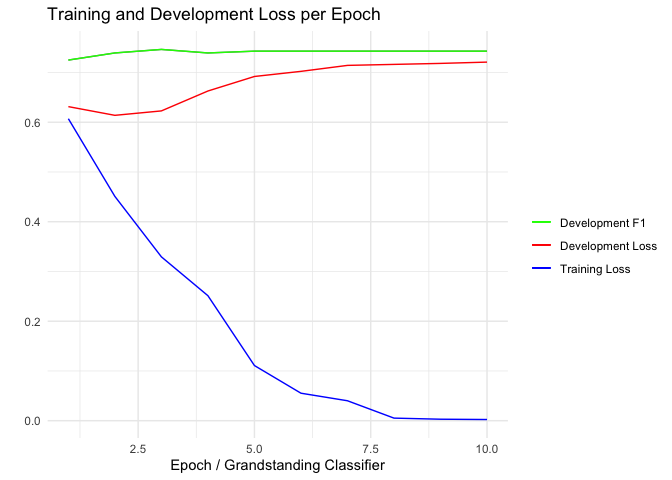

flairR: An R Wrapper for Accessing Flair NLP Library


{flaiR} is an R wrapper for the {flairNLP/flair} library in Python, designed specifically for R users, especially those in the social sciences. It provides easy access to the main functionalities of {flairNLP}. Developed by Developed by Zalando Research in Berlin, Flair NLP offers intuitive interfaces and exceptional multilingual support, particularly for various embedding frameworks and state-of-the-art natural language processing models to analyze your text, such as named entity recognition, sentiment analysis, part-of-speech tagging, biomedical data, sense disambiguation, and classification, with support for a rapidly growing number of languages in the community. For a comprehensive understanding of the {flairNLP/flair} architecture, you can refer to the research article ‘Contextual String Embeddings for Sequence Labeling’ and the official manual written for its Python implementation.
Installation via GitHub
The installation consists of two parts: First, install Python 3.8 or higher (avoid developmental versions and the very latest release for compatibility reasons). Secondly, install R 4.2.0 or higher.
System Requirement:
Python (>= 3.10.x)
R (>= 4.2.0)
RStudio (The GUI interface allows users to adjust and manage the Python environment in R)
Anaconda (highly recommended)
We have tested flaiR using CI/CD with GitHub Actions, conducting integration tests across various operating syste These tests include intergration between R versions 4.2.1, 4.3.2, and 4.2.0 and Python 3.10.x. The testing also covers environments with flair NLP and PyTorch (given that Flair NLP is built on Torch). For stable usage, we strongly recommend installing these specific versions.
When first installed, {flaiR} automatically detects whether you have Python 3.8 or higher. If not, it will skip the automatic installation of Python and flair NLP. In this case, you will need to manually install it yourself and reload {flaiR} again. If you have correct Pythoninstalled, the {flaiR} will automatically install flair Python NLP in your global environment. If you are using {reticulate}, {flaiR} will typically assume the r-reticulate environment by default. At the same time, you can use py_config() to check the location of your environment. Please note that flaiR will directly install flair NLP in the Python environment that your R is using. This environment can be adjusted through RStudio by navigating to Tools -> Global Options -> Python. If there are any issues with the installation, feel free to ask in the Discussion .
First, understanding which Python environment your RStudio is using is very important. We advise you to confirm which Python environment RStudio is using. You can do this by checking with reticulate::py_config() or manually via Tools -> Global Options -> Python.
install.packages("reticulate")
reticulate::py_config()At this stage, you’ll observe that RStudio has defaulted to using the ‘flair_env’ environment I have set up. Consequently, the Python Flair package will be installed within this environment. Should you wish to modify this setting, you have the option to either adjust it within RStudio’s settings or utilize the {reticulate} package to manage the Python environment in RStudio.
#> python: /Users/*********/.virtualenvs/flair_env/bin/python
#> libpython: /Users/*********/.pyenv/versions/3.10.13/lib/libpython3.10.dylib
#> pythonhome: /Users/*********/.virtualenvs/flair_env:/Users/*********/.virtualenvs/flair_env
#> version: 3.10.13 (main, Oct 27 2023, 04:44:16) [Clang 15.0.0 (clang-1500.0.40.1)]
#> numpy: /Users/*********/.virtualenvs/flair_env/lib/python3.10/site-packages/numpy
#> numpy_version: 1.26.2
#> flair: /Users/*********/.virtualenvs/flair_env/lib/python3.10/site-packages/flair
#> NOTE: Python version was forced by use_python() functionNow, you can confidently install flaiR in your R environment.
install.packages("remotes")
remotes::install_github("davidycliao/flaiR", force = TRUE)You will notice the following message, indicating a successful installation. This means that your RStudio has successfully detected the correct Python and has installed Flair in your Python environment
library(flaiR)
#> flaiR: An R Wrapper for Accessing Flair NLP 0.13.0Introduction
For R users, {flairR} primarily consists of two main components. The first is wrapper functions in {flaiR} built on top of {reticulate}, which enables you to interact directly with Python modules in R and provides seamless support for documents and tutorial (in progress) in the R community. The {flaiR} package enables R users to leverage Flair’s capabilities to train their own models using the Flair framework and state-of-the-art NLP models without the need to interact directly with Python.
Flair offers a simpler and more intuitive approach for training custom NLP models compared to using Transformer-based models directly. With Flair, data loading and preprocessing are streamlined, facilitating the easy integration of various pre-trained embeddings, including both traditional and Transformer-based types like BERT. The training process in Flair is condensed to just a few lines of code, with automatic handling of fundamental preprocessing steps. Evaluation and optimization are also made user-friendly with accessible tools. In addition, Flair NLP provides an easy framework for training language models and is compatible with HuggingFace.
Training Models with HuggingFace via flaiR
The following example offers a straightforward introduction on how to fully train your own model using the Flair framework and import a BERT model from HuggingFace 🤗. This example utilizes grandstanding score as training data from Julia Park’s paper (When Do Politicians Grandstand? Measuring Message Politics in Committee Hearings) and trains the model using Transformer-based models via flair NLP through {flaiR}.
Step 1 Split Data into Train and Test Sets with flair Sentence Object
# load flair functions via flaiR
Sentence <- flair_data()$Sentence
Corpus <- flair_data()$Corpus
TransformerDocumentEmbeddings <- flair_embeddings()$TransformerDocumentEmbeddings
TextClassifier <- flair_models()$TextClassifier
ModelTrainer <- flair_trainers()$ModelTrainer
# split the data
text <- lapply(gs_score$speech, Sentence)
labels <- as.character(gs_score$rescaled_gs)
for (i in 1:length(text)) {
text[[i]]$add_label("classification", labels[[i]])
}
set.seed(2046)
sample <- sample(c(TRUE, FALSE), length(text), replace=TRUE, prob=c(0.8, 0.2))
train <- text[sample]
test <- text[!sample]Step 2 Preprocess Data and Corpus Object
corpus <- Corpus(train=train, test=test)
#> 2023-11-28 15:45:25,437 No dev split found. Using 0% (i.e. 282 samples) of the train split as dev dataStep 3 Create Classifier Using Transformer
document_embeddings <- TransformerDocumentEmbeddings('distilbert-base-uncased', fine_tune=TRUE)$make_label_dictionary function is used to create a label dictionary for the classification task. The label dictionary is a mapping from label to index, which is used to map the labels to a tensor of label indices. expcept classifcation task, flair also supports other label types for training custom model, such as ner, pos and sentiment.
label_dict <- corpus$make_label_dictionary(label_type="classification")
#> 2023-11-28 15:45:27,011 Computing label dictionary. Progress:
#> 2023-11-28 15:45:27,061 Dictionary created for label 'classification' with 2 values: 0 (seen 1325 times), 1 (seen 1209 times)$item2idx method to check the mapping from label to index. This is very important to make sure the labels are mapped correctly to the indices and tensors.
label_dict$item2idx
#> $`b'0'`
#> [1] 0
#>
#> $`b'1'`
#> [1] 1TextClassifier is used to create a text classifier. The classifier takes the document embeddings (importing from 'distilbert-base-uncased from HugginFace) and the label dictionary as input. The label type is also specified as classification.
classifier <- TextClassifier(document_embeddings,
label_dictionary=label_dict,
label_type='classification')Step 4 Start Training
specific computation devices on your local machine. If you have a GPU, you can use flair_gpu to specify the GPU device. If you don’t have a GPU, you can use flaiR::flair_device to specify the CPU device.
classifier$to(flair_device("cpu"))
#> TextClassifier(
#> (embeddings): TransformerDocumentEmbeddings(
#> (model): DistilBertModel(
#> (embeddings): Embeddings(
#> (word_embeddings): Embedding(30523, 768)
#> (position_embeddings): Embedding(512, 768)
#> (LayerNorm): LayerNorm((768,), eps=1e-12, elementwise_affine=True)
#> (dropout): Dropout(p=0.1, inplace=False)
#> )
#> (transformer): Transformer(
#> (layer): ModuleList(
#> (0-5): 6 x TransformerBlock(
#> (attention): MultiHeadSelfAttention(
#> (dropout): Dropout(p=0.1, inplace=False)
#> (q_lin): Linear(in_features=768, out_features=768, bias=True)
#> (k_lin): Linear(in_features=768, out_features=768, bias=True)
#> (v_lin): Linear(in_features=768, out_features=768, bias=True)
#> (out_lin): Linear(in_features=768, out_features=768, bias=True)
#> )
#> (sa_layer_norm): LayerNorm((768,), eps=1e-12, elementwise_affine=True)
#> (ffn): FFN(
#> (dropout): Dropout(p=0.1, inplace=False)
#> (lin1): Linear(in_features=768, out_features=3072, bias=True)
#> (lin2): Linear(in_features=3072, out_features=768, bias=True)
#> (activation): GELUActivation()
#> )
#> (output_layer_norm): LayerNorm((768,), eps=1e-12, elementwise_affine=True)
#> )
#> )
#> )
#> )
#> )
#> (decoder): Linear(in_features=768, out_features=2, bias=True)
#> (dropout): Dropout(p=0.0, inplace=False)
#> (locked_dropout): LockedDropout(p=0.0)
#> (word_dropout): WordDropout(p=0.0)
#> (loss_function): CrossEntropyLoss()
#> )ModelTrainer is used to train the model, which learns from the data based on the grandstanding score.
trainer <- ModelTrainer(classifier, corpus)
trainer$train('grand_standing_model', # output directory
learning_rate=0.02, # learning rate: if batch_growth_annealing activates,lr should starts a bit higher.
mini_batch_size=8L, # batch size
anneal_with_restarts = TRUE,
save_final_model=TRUE,
max_epochs=3L) # Maximum number of epochsStep 5 Evaluate the Model
During and after the model training process, evaluating the performance of the trained model on the development set is straightforward and easy.
# import the performance metrics generated during the training process
performance_df <- read.table(file = "grand_standing/loss.tsv", header = TRUE, sep = "\t")
head(performance_df)
#> EPOCH TIMESTAMP LEARNING_RATE TRAIN_LOSS DEV_LOSS DEV_PRECISION DEV_RECALL
#> 1 1 13:07:11 0.02 0.6071 0.6314 0.7250 0.7250
#> 2 2 13:11:19 0.02 0.4509 0.6139 0.7393 0.7393
#> 3 3 13:21:47 0.02 0.3294 0.6228 0.7464 0.7464
#> 4 4 13:25:03 0.02 0.2513 0.6628 0.7393 0.7393
#> 5 5 13:28:10 0.02 0.1109 0.6920 0.7429 0.7429
#> 6 6 13:31:16 0.02 0.0553 0.7023 0.7429 0.7429
#> DEV_F1 DEV_ACCURACY
#> 1 0.7250 0.7250
#> 2 0.7393 0.7393
#> 3 0.7464 0.7464
#> 4 0.7393 0.7393
#> 5 0.7429 0.7429
#> 6 0.7429 0.7429
library(ggplot2)
ggplot(performance_df, aes(x = EPOCH)) +
geom_line(aes(y = TRAIN_LOSS, color = "Training Loss")) +
geom_line(aes(y = DEV_LOSS, color = "Development Loss")) +
geom_line(aes(y = DEV_RECALL, color = "Development Recall")) +
geom_line(aes(y = DEV_F1, color = "Development F1")) +
labs(title = "Training and Development Loss per Epoch",
x = "Epoch / Grandstanding Classifier",
y = "") +
scale_color_manual("",
values = c("Training Loss" = "blue",
"Development Loss" = "red",
"Development F1" = "green"))+
theme_minimal() 
The overall performance of the model on the test set is also straightforward and easy to evaluate. You can find the performance metrics in the model/training.log file.
Results:
- F-score (micro) 0.7443
- F-score (macro) 0.7438
- Accuracy 0.7443
By class:
precision recall f1-score support
1 0.6781 0.8519 0.7551 324
0 0.8362 0.6516 0.7324 376
accuracy 0.7443 700
macro avg 0.7572 0.7517 0.7438 700
weighted avg 0.7630 0.7443 0.7429 700Step 6 Apply the Trained Model on Unseen Data for Prediction
We use the statement in the dataset as an example.
# load the trained model
data(statements)
Sentence <- flair_data()$Sentence
text <- statements[1, "Statement"]
sentence <- Sentence(text)lassifier$predict function is used to predict the label of the sentence. The function returns a sentence object with the predicted label.
classifier$predict(sentence)
print(sentence)
#> Sentence[55]: "Ladies and gentlemen, I stand before you today not just as a legislator, but as a defender of our very way of life! We are facing a crisis of monumental proportions, and if we don't act now, the very fabric of our society will unravel before our eyes!" → 0 (0.6865)sentence$labels is a list of labels, each of which has a value and a score. The value is the label itself, and the score is the probability of the label. The label with the highest score is the predicted label.
sentence$labels[[1]]$value
#> [1] "0"
sentence$labels[[1]]$score
#> [1] 0.6864765Step 7 Reload the Model with the Best Performance
When you train the model with save_final_model=TRUE, the model with the best performance on the development set will be saved in the output directory. You can reload the model with the best performance using the load function.
Sentence <- flair_data()$Sentence
TextClassifier <- flair_models()$TextClassifier
classifier <- TextClassifier$load('grand_standing/best-model.pt')We can create a function to classify the text using the specified Flair classifier.
classify_text <- function(text, classifier) {
# Classifies the given text using the specified Flair classifier.
#
# Args:
# text (str): The text to be classified.
# classifier (TextClassifier): The Flair classifier to use for prediction.
#
# Returns:
# list: A list containing the predicted class label and score as strings.
sentence <- Sentence(text)
classifier$predict(sentence)
return(list (labels = sentence$labels[[1]]$value, score = as.character(sentence$labels[[1]]$score)))
}Before performing classication tast, let’s quickly check the dataset.
data(statements)
print(statements)
#> Type
#> 1 Dramatic Appeal to Emotion
#> 2 Exaggerated Praise for a Local Issue
#> 3 Over-Simplified Solution to Complex Issue
#> 4 Personal Anecdote Over Policy
#> 5 Blaming Political Opponents
#> Statement
#> 1 Ladies and gentlemen, I stand before you today not just as a legislator, but as a defender of our very way of life! We are facing a crisis of monumental proportions, and if we don't act now, the very fabric of our society will unravel before our eyes!
#> 2 I want to bring attention to the extraordinary achievement of the Smallville High School baseball team. Their victory is not just a win for Smallville, but a symbol of hope for our nation! This is what true American spirit looks like!
#> 3 The solution to our nation's economic struggles is simple: cut taxes. That's it. Cut them. The economy will skyrocket like never before. Why complicate things when the answer is right there in front of us?
#> 4 I remember, back in my hometown, old Mr. Jenkins used to say, 'If it ain't broke, don't fix it.' That's exactly how I feel about our current healthcare system. We don't need reform; we just need good, old-fashioned common sense.
#> 5 Every problem we face today can be traced back to the disastrous policies of the other party. They are the reason we are in this mess, and until we recognize that, we cannot move forward as a nation.Let’s apply the function to the dataset.
for (i in seq_along(statements$Statement) ) {
out_come <- classify_text(statements$Statement[[i]], classifier)
statements[i, 'predicted_labels'] <- out_come[[1]]
statements[i, 'prop_score'] <- out_come[[2]]
}
statements[c("Type", "predicted_labels", "prop_score")]
#> Type predicted_labels prop_score
#> 1 Dramatic Appeal to Emotion 1 0.998062312602997
#> 2 Exaggerated Praise for a Local Issue 1 0.985962450504303
#> 3 Over-Simplified Solution to Complex Issue 1 0.967254757881165
#> 4 Personal Anecdote Over Policy 1 0.998513281345367
#> 5 Blaming Political Opponents 1 0.999097466468811Secondly, to facilitate more efficient use for social science research, {flairR} expands {flairNLP/flair}’s core functionality for working with three major functions to extract features in a tidy and fast format– data.table in R.
Performing NLP Tasks in R
The expanded features (and examples) can be found:
In addition, to handle the load on RAM when dealing with larger corpus, {flairR} supports batch processing to handle texts in batches, which is especially useful when dealing with large datasets, to optimize memory usage and performance. The implementation of batch processing can also utilize GPU acceleration for faster computations.
Contribution and Open Source
{flaiR} is maintained and developed by David Liao and friends. R developers who want to contribute to {flaiR} are welcome – {flaiR} is an open source project. I warmly invite R users who share similar interests to join in contributing to this package. Please feel free to shoot me an email to collaborate on the task. Contributions – whether they be comments, code suggestions, tutorial examples, or forking the repository – are greatly appreciated. Please note that the flaiR is released with the Contributor Code of Conduct. By contributing to this project, you agree to abide by its terms.
The primary communication channel for R users can be found here. Please feel free to share your insights on the Discussion page and report any issues related to the R interface in the Issue section. If the issue pertains to the actual implementation of Flair in Python, please submit a pull request to the offical flair NLP.